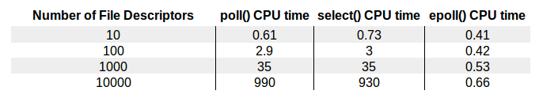

epoll - I/O event notification facility
通常来说，实现处理tcp请求，为一个连接一个线程，在高并发的场景，这种多线程模型与Epoll相比就显得相形见绌了。epoll是linux2.6内核的一个新的系统调用，epoll在设计之初，就是为了替代select, poll线性复杂度的模型，epoll的时间复杂度为O(1), 也就意味着，epoll在高并发场景，随着文件描述符的增长，有良好的可扩展性。
select 和 poll 监听文件描述符list，进行一个线性的查找 O(n)epoll: 使用了内核文件级别的回调机制O(1)下图展示了文件描述符的量级和CPU耗时

epoll_create1: 创建一个epoll实例，文件描述符epoll_ctl: 将监听的文件描述符添加到epoll实例中，实例代码为将标准输入文件描述符添加到epoll中epoll_wait: 等待epoll事件从epoll实例中发生， 并返回事件以及对应文件描述符epoll事件有两种模型，边沿触发：edge-triggered (ET)， 水平触发：level-triggered (LT)
水平触发(level-triggered)
边沿触发(edge-triggered)
边沿触发仅触发一次，水平触发会一直触发。
事件宏
EPOLLIN ： 表示对应的文件描述符可以读（包括对端SOCKET正常关闭）； EPOLLOUT： 表示对应的文件描述符可以写； EPOLLPRI： 表示对应的文件描述符有紧急的数据可读（这里应该表示有带外数据到来）； EPOLLERR： 表示对应的文件描述符发生错误； EPOLLHUP： 表示对应的文件描述符被挂断； EPOLLET： 将 EPOLL设为边缘触发(Edge Triggered)模式（默认为水平触发），这是相对于水平触发(Level Triggered)来说的。 EPOLLONESHOT： 只监听一次事件，当监听完这次事件之后，如果还需要继续监听这个socket的话，需要再次把这个socket加入到EPOLL队列里
xxxxxxxxxx struct epoll_event ev, events[MAX_EVENTS]; int listen_sock, conn_sock, nfds, epollfd; /* Code to set up listening socket, 'listen_sock', (socket(), bind(), listen()) omitted */ // 创建epoll实例 epollfd = epoll_create1(0); if (epollfd == -1) { perror("epoll_create1"); exit(EXIT_FAILURE); } // 将监听的端口的socket对应的文件描述符添加到epoll事件列表中 ev.events = EPOLLIN; ev.data.fd = listen_sock; if (epoll_ctl(epollfd, EPOLL_CTL_ADD, listen_sock, &ev) == -1) { perror("epoll_ctl: listen_sock"); exit(EXIT_FAILURE); } for (;;) { // epoll_wait 阻塞线程，等待事件发生 nfds = epoll_wait(epollfd, events, MAX_EVENTS, -1); if (nfds == -1) { perror("epoll_wait"); exit(EXIT_FAILURE); } for (n = 0; n < nfds; ++n) { if (events[n].data.fd == listen_sock) { // 新建的连接 conn_sock = accept(listen_sock, (struct sockaddr *) &addr, &addrlen); // accept 返回新建连接的文件描述符 if (conn_sock == -1) { perror("accept"); exit(EXIT_FAILURE); } setnonblocking(conn_sock); // setnotblocking 将该文件描述符置为非阻塞状态 ev.events = EPOLLIN | EPOLLET; ev.data.fd = conn_sock; // 将该文件描述符添加到epoll事件监听的列表中，使用ET模式 if (epoll_ctl(epollfd, EPOLL_CTL_ADD, conn_sock, &ev) == -1) perror("epoll_ctl: conn_sock"); exit(EXIT_FAILURE); } } else { // 使用已监听的文件描述符中的数据 do_use_fd(events[n].data.fd); } } }Epoll在linux内核中源码主要为 eventpoll.c 和 eventpoll.h 主要位于fs/eventpoll.c 和 include/linux/eventpool.h, 具体可以参考linux3.16，下述为部分关键数据结构摘要, 主要介绍epitem 红黑树节点 和eventpoll 关键入口数据结构，维护着链表头节点ready list header和红黑树根节点RB-Tree root。
xxxxxxxxxx/* * Each file descriptor added to the eventpoll interface will * have an entry of this type linked to the "rbr" RB tree. * Avoid increasing the size of this struct, there can be many thousands * of these on a server and we do not want this to take another cache line. */struct epitem { union { /* RB tree node links this structure to the eventpoll RB tree */ struct rb_node rbn; /* Used to free the struct epitem */ struct rcu_head rcu; }; /* List header used to link this structure to the eventpoll ready list */ struct list_head rdllink; /* * Works together "struct eventpoll"->ovflist in keeping the * single linked chain of items. */ struct epitem *next; /* The file descriptor information this item refers to */ struct epoll_filefd ffd; /* Number of active wait queue attached to poll operations */ int nwait; /* List containing poll wait queues */ struct list_head pwqlist; /* The "container" of this item */ struct eventpoll *ep; /* List header used to link this item to the "struct file" items list */ struct list_head fllink; /* wakeup_source used when EPOLLWAKEUP is set */ struct wakeup_source __rcu *ws; /* The structure that describe the interested events and the source fd */ struct epoll_event event;};/* * This structure is stored inside the "private_data" member of the file * structure and represents the main data structure for the eventpoll * interface. */struct eventpoll { /* Protect the access to this structure */ spinlock_t lock; /* * This mutex is used to ensure that files are not removed * while epoll is using them. This is held during the event * collection loop, the file cleanup path, the epoll file exit * code and the ctl operations. */ struct mutex mtx; /* Wait queue used by sys_epoll_wait() */ wait_queue_head_t wq; /* Wait queue used by file->poll() */ wait_queue_head_t poll_wait; /* List of ready file descriptors */ struct list_head rdllist; /* RB tree root used to store monitored fd structs */ struct rb_root rbr; /* * This is a single linked list that chains all the "struct epitem" that * happened while transferring ready events to userspace w/out * holding ->lock. */ struct epitem *ovflist; /* wakeup_source used when ep_scan_ready_list is running */ struct wakeup_source *ws; /* The user that created the eventpoll descriptor */ struct user_struct *user; struct file *file; /* used to optimize loop detection check */ int visited; struct list_head visited_list_link;};
epoll使用RB-Tree红黑树去监听并维护所有文件描述符，RB-Tree的根节点
调用epoll_create时，内核除了帮我们在epoll文件系统里建了个file结点，在内核cache里建了个 红黑树 用于存储以后epoll_ctl传来的socket外，还会再建立一个list链表，用于存储准备就绪的事件.
当epoll_wait调用时，仅仅观察这个list链表里有没有数据即可。有数据就返回，没有数据就sleep，等到timeout时间到后即使链表没数据也返回。所以，epoll_wait非常高效。而且，通常情况下即使我们要监控百万计的句柄，大多一次也只返回很少量的准备就绪句柄而已，所以，epoll_wait仅需要从内核态copy少量的句柄到用户态而已.
那么，这个准备就绪list链表是怎么维护的呢？
当我们执行epoll_ctl时，除了把socket放到epoll文件系统里file对象对应的红黑树上之外，还会给内核中断处理程序注册一个回调函数，告诉内核，如果这个句柄的中断到了，就把它放到准备就绪list链表里。所以，当一个socket上有数据到了，内核在把网卡上的数据copy到内核中后就来把socket插入到准备就绪链表里了。
epoll高效的本质在于：